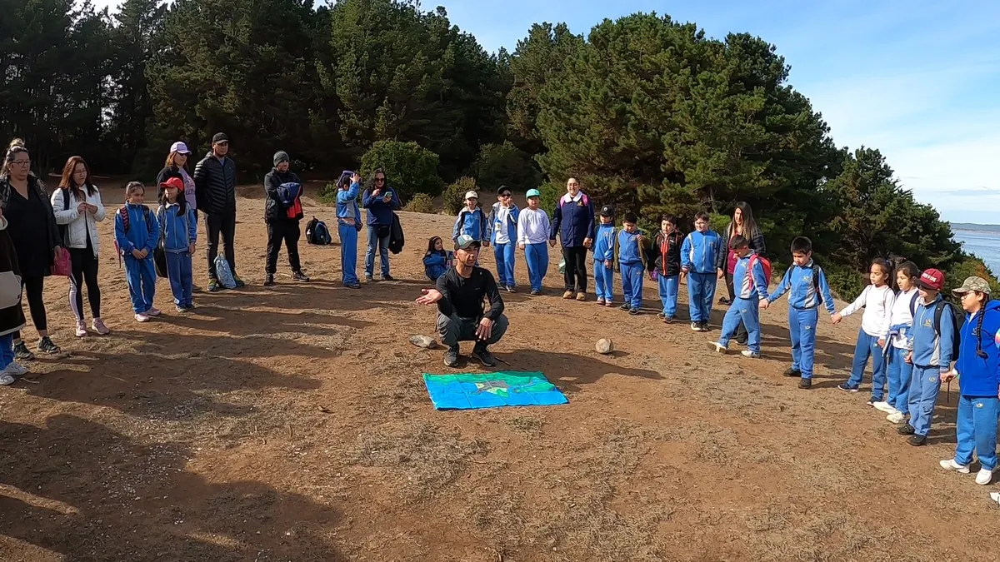

Talleres de biodiversidad
Actividades para reconocer la diversidad de organismos y comprender sus relaciones con el ambiente.

Aprendizaje y naturaleza
Talleres y programas participativos que conectan biodiversidad, observación científica y experiencias al aire libre.
Respuesta directa
Partimos por el grupo, el contexto y el aprendizaje esperado; luego definimos una experiencia participativa que acerque el conocimiento ambiental a situaciones observables y significativas.
Las actividades pueden combinar conversación, observación, dinámicas, interpretación ambiental, ciencia y contacto con la naturaleza. El contenido y la metodología se ajustan a la edad, cantidad de participantes, espacio disponible, tiempo y objetivos de la organización.
Experiencias educativas
Actividades para reconocer la diversidad de organismos y comprender sus relaciones con el ambiente.
Lectura guiada del territorio para conectar elementos naturales, procesos ecológicos y experiencia cotidiana.
Experiencias de observación y aprendizaje al aire libre cuando el objetivo y las condiciones lo permiten.
Propuestas adaptadas a comunidades educativas, edades, objetivos y espacios disponibles.
Instancias participativas para fortalecer el vínculo con la biodiversidad y el entorno local.
Actividades que integran atención, movimiento y conexión consciente con el ambiente.
Responsable técnico: Luis E. Carrera Suárez, biólogo, investigador y educador ambiental. Conoce la experiencia de Caminando Otro Sendero.
Diseño del programa
No ofrecemos una dinámica idéntica para todos: adaptamos contenidos, lenguaje y participación al contexto real.
Definimos público, objetivos y aprendizaje esperado.
Revisamos lugar, duración, edades y número de participantes.
Diseñamos contenidos y actividades participativas.
Facilitamos la jornada y cerramos los aprendizajes.
Recursos públicos
Los programas pueden dialogar con iniciativas y recursos públicos de educación ambiental, siempre según los objetivos específicos del establecimiento u organización.
Preguntas frecuentes
Información para comenzar a diseñar una experiencia.
Es una experiencia diseñada para comprender un tema ambiental mediante observación, participación y actividades conectadas con el contexto del grupo y su territorio.
Pueden diseñarse para establecimientos educacionales, comunidades, familias, empresas u otras organizaciones.
Sí. Cuando el objetivo y las condiciones lo permiten, pueden incorporar observación e interpretación en terreno.
Sí. El lenguaje, la duración y las dinámicas se ajustan al grupo participante y al aprendizaje esperado.
Objetivo, tipo de participantes, cantidad aproximada, edades, lugar, fecha tentativa y duración disponible.
Aprender en el ambiente
Comparte el público, objetivo, lugar y fecha tentativa de tu actividad.